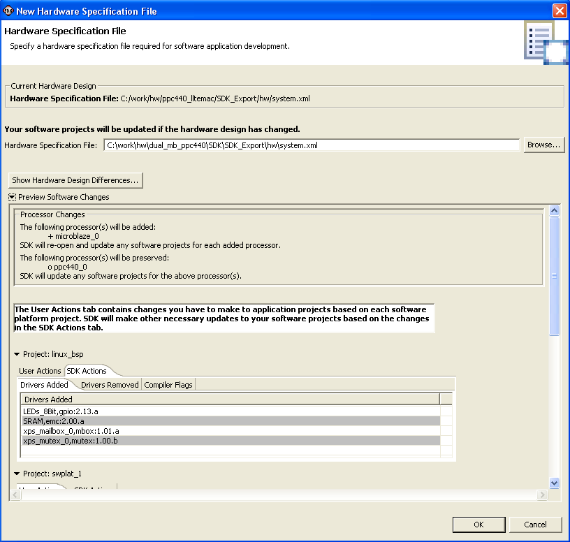

Re-targeting software projects
You can re-target the software projects in a workspace to build and run on a different hardware design using this procedure:
- Select Hardware Design > Import Hardware Design. The Hardware Specification dialog opens. This will list the current hardware design used by the workspace.
- In the New Hardware Specification File dialog box, specify the new hardware specification file.
- To compare the current and new hardware design and view differences between the two, click Show Hardware Design Differences. SDK opens a browser to display the differences.
- To view the changes to software projects that will be made by SDK, click Preview Software Changes. The window lists the software changes per software platform. Some changes cannot be made by SDK; these are displayed in the User Actions tab. Click this tab and make the recommended changes to your software projects.
- Click OK to re-target the software projects. SDK makes the necessary changes to the software.
Note: If Build Automatically is selected in the Project menu, the project builds automatically.
- If you do not want to re-target the software projects, click Cancel. No changes are made to your software projects.


Embedded hardware components
Hardware specification file
Copyright © 1995-2009 Xilinx, Inc. All rights reserved.